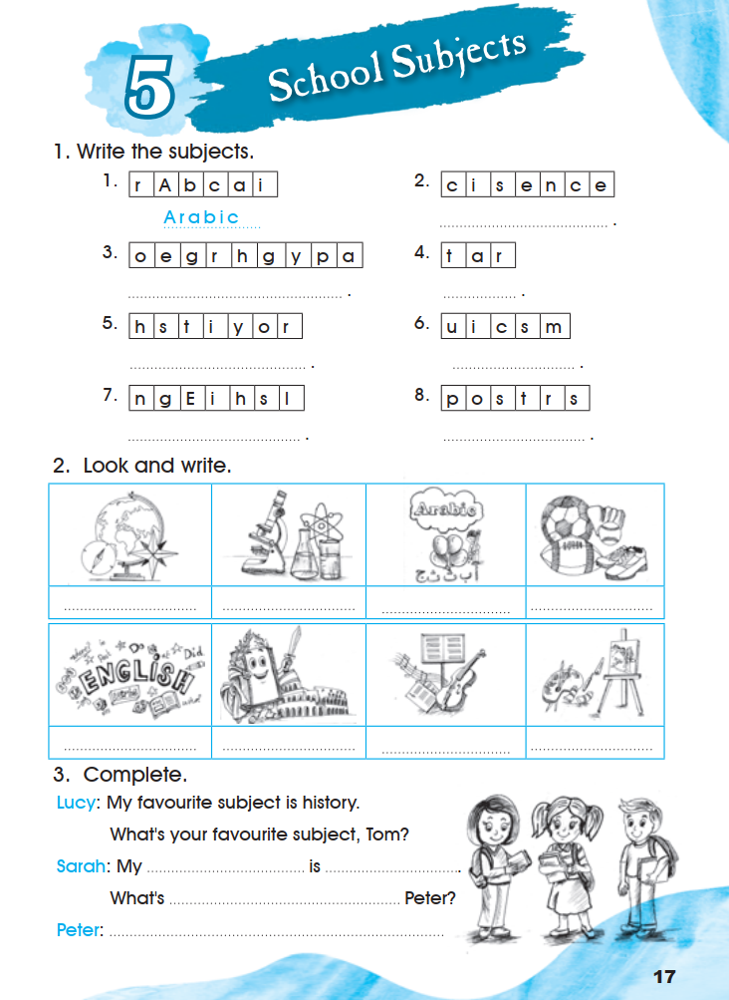
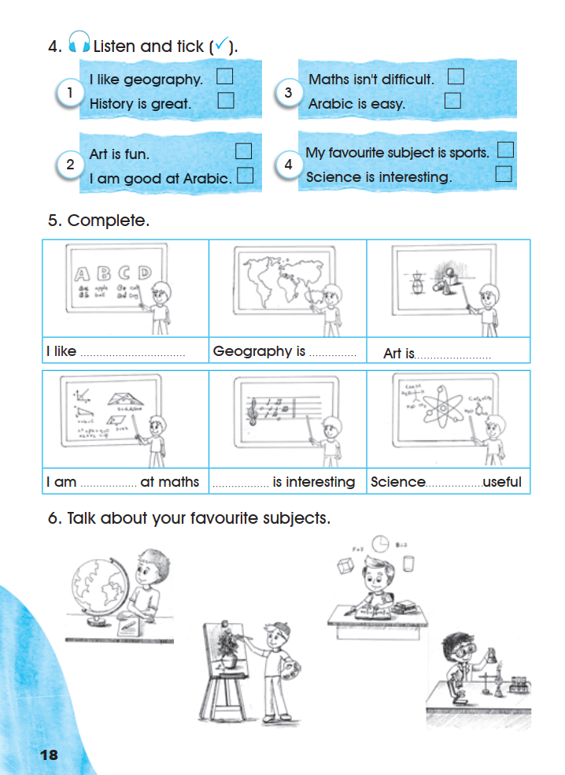

Workbook
School Subjects · pages 17–21. The complete original source scans below preserve printed content and layout.
Workbook · page 17
Original source scan 7, preserved byte-for-byte. This page includes all visible exercises, directions, examples and illustrations exactly as supplied.

Accessible text transcription · page 17
5 · School Subjects
1. Write the subjects.
1. r A b c a j i (Arabic)
2. c i s e n c e
3. o e g r h g y p a
4. t a r
5. h s t i y o r
6. u i c s m
7. n g E i h s l
8. p o s t r s
2. Look and write. Eight subject pictures are shown in the source scan.
3. Complete.
Lucy: My favourite subject is history. What’s your favourite subject, Tom?
Sarah: My … is … . What’s …, Peter?
Peter: …The complete untouched scan above remains the reference for its illustrations, alignment, tick boxes and picture matching. No missing listening transcript or answer is inferred.
Image provenance and source details
Upload image 7; allocated only to Lesson 5 Workbook; source page 17. SHA-256 is recorded in the source manifest.
Open original scanAudio limitation: the printed listening task is visible in the scan, but its recording and transcript were not supplied. No listening answers are invented.
Workbook · page 18
Original source scan 8, preserved byte-for-byte. This page includes all visible exercises, directions, examples and illustrations exactly as supplied.

Accessible text transcription · page 18
4. Listen and tick ✓.
1. I like geography. / History is great.
2. Art is fun. / I am good at Arabic.
3. Maths isn’t difficult. / Arabic is easy.
4. My favourite subject is sports. / Science is interesting.
5. Complete.
I like … · Geography is … · Art is … · I am … at maths · … is interesting · Science … useful.
6. Talk about your favourite subjects. Four subject illustrations are shown. Audio was not supplied.The complete untouched scan above remains the reference for its illustrations, alignment, tick boxes and picture matching. No missing listening transcript or answer is inferred.
Image provenance and source details
Upload image 8; allocated only to Lesson 5 Workbook; source page 18. SHA-256 is recorded in the source manifest.
Open original scanWorkbook · page 19
Original source scan 9, preserved byte-for-byte. This page includes all visible exercises, directions, examples and illustrations exactly as supplied.

Accessible text transcription · page 19
7. Read and do the task.
Hello, I’m Luna. My favourite subject is science. In my school we have science on Monday and Thursday. I like the science class very much. It is interesting and useful. I feel happy most when we go to the lab, because we do experiments. I am good at science and I want to be a scientist when I grow up.
Choose:
1. Luna likes … very much. a. art · b. science · c. maths
2. Science class is on … a. Sunday · b. Tuesday · c. Monday and Thursday
3. Luna is most happy in the … a. lab · b. school · c. science class
4. Luna wants to be a … when she grows up. a. doctor · b. teacher · c. scientist
8. Reorder.
1. easy – is – English
2. good – I – at – music – am
9. Write about your favourite subject.
1. My …
2. We have … on … and …
3. I like it because it is … and …
4. …The complete untouched scan above remains the reference for its illustrations, alignment, tick boxes and picture matching. No missing listening transcript or answer is inferred.
Image provenance and source details
Upload image 9; allocated only to Lesson 5 Workbook; source page 19. SHA-256 is recorded in the source manifest.
Open original scanWorkbook · page 20
Original source scan 10, preserved byte-for-byte. This page includes all visible exercises, directions, examples and illustrations exactly as supplied.

Accessible text transcription · page 20
Revision 1
1. Choose.
1. I (go – goes) to bed at nine o’clock in the evening.
2. She’s good (at – in) geography.
3. She (are – is) from Lebanon.
4. She (have got – has got) blond hair.
5. (There is – There are) two lamps in the living room.
2. Look and write a sentence about the picture. Four numbered picture prompts are shown.The untouched scan above remains authoritative for page layout, underlining, illustrations and answer spaces. No missing listening transcript or answer is inferred.
Image provenance and source details
Upload image 10; allocated only to Lesson 5 Workbook; source page 20. SHA-256 is recorded in the source manifest.
Open original scanAudio limitation: the printed listening task is visible in the scan, but its recording and transcript were not supplied. No listening answers are invented.
Workbook · page 21
Original source scan 11, preserved byte-for-byte. This page includes all visible exercises, directions, examples and illustrations exactly as supplied.

Accessible text transcription · page 21
3. Reorder.
1. got – She – has – green – eyes.
2. in – morning – make – bed – my – I – the
3. There – sofa – isn’t – a – bathroom – in – the
4. Hello – Jane! – meet – Nice – you – to
5. difficult – Geography – isn’t
4. Complete the dialogue.
1. What’s your name?
2. Where are you from?
3. What’s your teacher’s name?
4. What does she/he look like?
5. What’s your favourite subject?
6. What do you do in the morning?
Lebanon
Every summer, I usually go to Lebanon to visit my grandparents. Lebanon is close to Syria. Lebanon is famous for its rivers, sea and mountains. You can do a lot of exciting activities in Lebanon, you can go diving in the sea, and you can go hiking in the mountains. It’s fun to go shopping in its old markets. That’s why I love Lebanon.
Tick (✓) or cross (✗).
1. Lebanon is close to Syria.
2. Lebanon is famous only for its mountains.
3. There is nothing to do in Lebanon.
4. It’s fun to go shopping in its old markets.The untouched scan above remains authoritative for page layout, underlining, illustrations and answer spaces. No missing listening transcript or answer is inferred.
Image provenance and source details
Upload image 11; allocated only to Lesson 5 Workbook; source page 21. SHA-256 is recorded in the source manifest.
Open original scanPersonal practice drafts are saved in this browser; source scans remain unchanged.